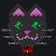
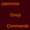
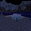
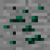
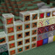

Mods
Proxy's Trinkets [WIP]
A merger mod of all my older content in one place to make it easier for me to maintain things since it's all a mush of random bits and bobs.
Powered by Coffee [WIP]
Hmmm, I wonder... If coffee gives me energy can it give me power???
Kitty Kat's Staff
A tiny mod that adds a staff to the game for little witches in training so they can summon a little kitty cat! We hope you like it Kat!
Japanese Emoji Commands
A small mod that adds Japanese Emojis (Kaomoji) to Minecraft.
Spooky Biomes
Some spooky biomes and other things I added for SpookyJam, MMD's Halloween event in 2017.
Proxy's Lib
A small library mod I made to share code between two of my mods. Required by Spooky Biomes and Proxy's Trinkets.
Ender Dust And More
A mod of random bits and bobs I felt like adding to Minecraft once upon a time. (Discontinued - Merged into Proxy's Trinkets)
LoVoxNox
I don't even know where this one came from all I know is that I started making it when I was trying to make a small modpack for myself and an old friend to play, I ended up working on this instead... (Discontinued - Merged into Proxy's Trinkets)